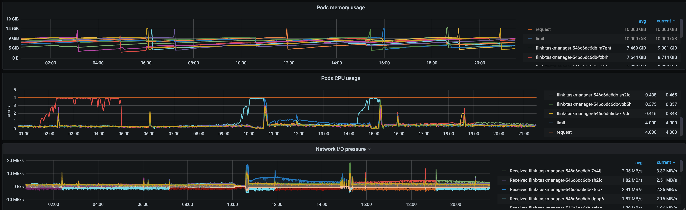
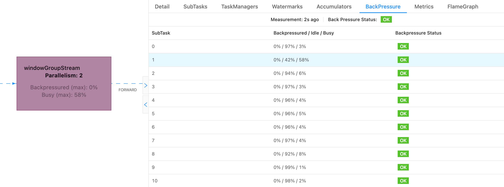
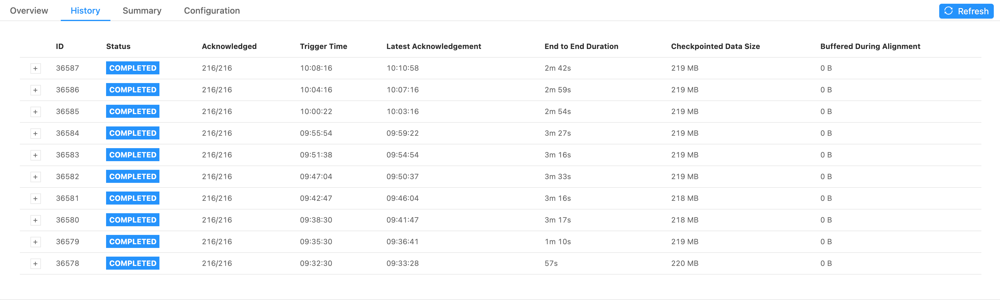
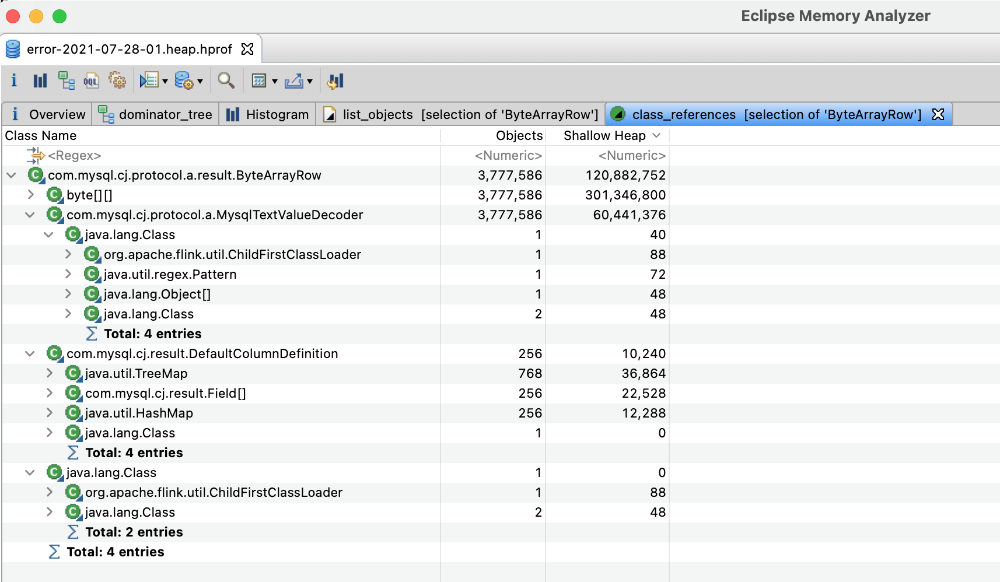
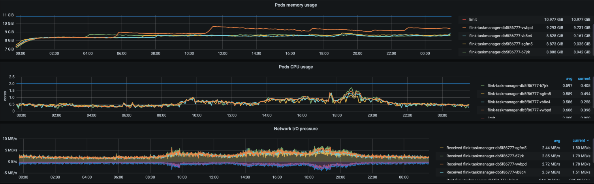

最近发现部署在 k8s 上的 Flink 每运行十几个小时就会卡住，导致消费延迟、上游数据积压。消费延迟较长时间后（时间不固定，可能十几分钟，也可能是一小时），又逐渐恢复正常。
在此分享一下排查过程。
现象 🔗
出问题的直接现象就是消费延迟，数据积压。
同时观察到，发生消费延迟时，Pod 的 CPU 利用率几乎是 100%，内存使用率相对稳定、网络 IO 也无明显变化。
并且几乎每次都是单个 Pod CPU 利用率 100%，其他 Pod 比较正常。

于是首先就面临三个问题：
- 为什么单个 Pod CPU 100% 会导致整个 Flink 任务消费延迟？
- 为什么通常延迟一段时间会恢复？
- 是否会造成数据丢失？
接下来就对上述三个问题进行初步分析。
初步分析 🔗
为什么单个 Pod CPU 100% 会导致整个 Flink 任务消费延迟？ 🔗
通常 Flink 任务出现消费延迟，直接原因就是反压，反压导致 Source 不再消费数据。 所以查看了 Flink 任务，发现确实有反压。并且造成反压的 SubTask 对应的 Pod 就是 CPU 使用率很高的 Pod。
如图所示，造成上游反压的主要是 windowGroupStream 的 SubTask 1。

虽然是部署在 k8s 上，有多个 Pod 在同时处理数据，但在 Flink 架构中，Pod 只是其的计算资源，Flink 会统一调度计算资源。当某个 Pod CPU 利用率 100% 时，该 Pod 上运行的 Task 就会变慢，甚至没有 CPU 可用。
当任务存使用了 keyBy 算子时，相同 key 的数据会被分配到同一个 Task 处理。所以当 key 没有均匀分布时，就可能导致大量数据集中在某个 Task，而其他 Task 比较空闲。最终由于该 Task 的 CPU 资源不足且数据无法被其他 Task 处理，导致上游反压，最终导致整个任务消费延迟。
恰好我们的 Flink 任务就使用了 keyBy 算子。所以这是造成单个 Pod CPU 使用率很高的原因之一。
此外也可能是分配到该 Pod 上的数据处理过程中，触发了某个 BUG，导致该 Pod CPU 使用率非常高。
为什么消费延迟一段时间后会恢复？ 🔗
反压通常还会带来另一个问题，就是 checkpoint 变慢。
如图所示，正常情况下，checkpoint 的时间不超过 1s，但出现反压时，checkpoint 耗时达到数分钟，甚至超时。

Flink 在进行 checkpoint 时，Checkpoint Coordinator 会向 source 和所有算子以及 sink 发送 barrier，每个算子接收到了 barrier 后，会暂停数据处理，生成自身状态快照并保存到持久化存储中，然后将数据地址（state handle）发送给 Checkpoint Coordinator。当 Checkpoint Coordinator 收集到所有算子的 state handle 后，就认为此次 checkpoint 完成了，然后再持久化存储保存一份 checkpoint meta 文件。
所以只要某个算子的 checkpoint 变慢，就会导致整个 checkpoint 变慢，甚至造成 checkpoint 超时。
Flink 的 checkpoint 有很多配置，这里主要针对其中两个进行说明：
execution.checkpointing.timeoutcheckpoint 超时时间execution.checkpointing.tolerable-failed-checkpoints可容忍的 checkpoint 失败次数，默认为 0
除了在 flink-conf.yaml 中配置，还可以在代码中指定：
// 设置 checkpoint 超时时间为 5 分钟
env.getCheckpointConfig().setCheckpointTimeout(1000 * 60 * 5);
// 设置可容忍的 checkpoint 失败次数为 0
env.getCheckpointConfig().setTolerableCheckpointFailureNumber(0);
按照上面的配置，如果 checkpoint 5 分钟还未完成，则 checkpoint 会失败。同时由于可容忍的失败次数为 0，所以一旦 checkpoint 失败，整个任务就会失败且停止。
由于我们的 Flink 任务是部署在 k8s 上，且配置了高可用，所以任务失败后，又会自动重启，因此消费延迟一段时间后会自动恢复。
除此之外，由于 Pod CPU 长期处于 100% 甚至超过 100%，由于 Pod 也设置了 cpu limit，如下：
resources:
limits:
cpu: 2
memory: 10Gi
requests:
cpu: 2
memory: 10Gi
所以当 Pod CPU 非常高时，Pod 也可能被 k8s 重启。观察 Pod 的重启次数不为 0，也印证了此猜测。对于部署 k8s 的 Flink 任务，当 Pod 重启后，整个 flink 任务也会重启。

所以消费延迟一段时间后会自动恢复，可能有两个原因：
- checkpoint 超时导致任务重启
- Pod CPU 超过 limit 限制，导致 Pod 重启，进而导致任务重启
虽然任务会自动恢复，但消费延迟可能是小时级别的，明显不可容忍。还是得找到根本原因。
在进一步定位前，另一个非常关心的问题就是，是否会造成数据丢失？
是否会造成数据丢失？ 🔗
在将任务部署到 k8s 上时，我们开启了 flink 的 checkpoint 机制，并且将 checkpoint 持久化保存到了 NAS 中，所以任务异常不会导致 checkpoint 状态丢失。当任务重启时，Flink 会从 NAS 中读取上次 checkpoint 进行恢复。
所以任务重启不会导致数据丢失，但会造成数据重复。
所以当还找到根本原因是，解决办法就是，出现消费延迟报警时，就及时重启任务。
这里在补充一些关于 Flink on k8s 的信息。我们的 Flink 任务部署到 k8s 上时，使用了 Flink 的 Elastic Scaling 模式，并基于 k8s 的 hpa 实现了弹性伸缩。当任务的 CPU 使用率较高时，就会自动扩容。
那为什么 Pod 的 CPU 到 100% 了，都没有自动扩容呢？这是因为每次消费延迟，只有个别 Pod CPU 使用率非常高，其他 Pod CPU 使用率都非常低，所以整体的 CPU 使用率没有达到扩容阈值，所以没有自动扩容。
原因定位 🔗
虽然经过初步分析，大概了解了整体情况，但并没有找到根本原因。
要找到根本原因，就需要在出现问题的那一刻观察 Flink 任务的各种指标，比如线程的 CPU 使用率、内存消耗、GC 情况等等。
所以为了得到更多信息，就需要打印更多日志。在 Flink 的 flink-conf.yaml 配置文件中，可以通过 env.java.opts 配置 JVM 参数，详见 Application Profiling & Debugging 。
于是在 flink-conf.yaml 中增加了如下配置，打印 GC 日志：
env.java.opts: "-Xloggc:/opt/flink/log/gc.log -XX:+PrintGCApplicationStoppedTime -XX:+PrintGCDetails -XX:+PrintGCDateStamps -XX:+UseGCLogFileRotation -XX:NumberOfGCLogFiles=10 -XX:GCLogFileSize=10M -XX:+PrintPromotionFailure -XX:+PrintGCCause -XX:+HeapDumpOnOutOfMemoryError -XX:HeapDumpPath=/opt/flink/log/heap.hprof"
-Xloggc:/opt/flink/log/gc.logGC 日志的存储位置-XX:PrintGCApplicationStoppedTime输出 GC 时应用暂停时间-XX:+PrintGCDetails输出 GC 的详细日志+PrintGCDateStamps输出 GC 的日期时间，格式为 2021-07-28T18:38:44.743+0800-XX:+UseGCLogFileRotation开启日志文件分割-XX:NumberOfGCLogFiles:NumberOfGCLogFiles最多分割几个 GC 日志文件-XX:GCLogFileSize=10M每个日志文件上限大小，超过就会触发分割-XX:+PrintPromotionFailure输出导致 GC 的原因-XX:+HeapDumpOnOutOfMemoryError发生内存泄漏时，自动打印 heapdump 文件-XX:HeapDumpPath=/opt/flink/log/heap.hprofheapdump 文件路径
然后重启应用，持续观察，一直到某个 Pod 再次出现异常。
功夫不负有心人，终于等到了十几个小时后，某个 Pod CPU 再次接近 100%，赶紧登录上去查看各种运行时信息。
分析 Java 进程及线程的 CPU 使用率 🔗
由于观察到的现象是 CPU 使用率 100%，所以第一反应是查看进程及线程的 CPU 情况。
确定进程 ID 🔗
首先通过 ps 命令确定进程 ID：
$ ps -auxwww
USER PID %CPU %MEM VSZ RSS TTY STAT START TIME COMMAND
flink 1 98.8 14.4 24410376 9317060 ? Ssl Jul28 1639:33 /usr/local/openjdk-8/bin/java -Xmx4563402682 -Xms4563402682 -XX:MaxDirectMemorySize=1073741838 -XX:MaxMetaspaceSize=268435456 -Xloggc:/opt/flink/log/gc.log
flink 1072789 0.0 0.0 5752 3656 pts/0 Ss 14:36 0:00 bash
flink 1072902 0.0 0.0 9392 3008 pts/0 R+ 14:36 0:00 ps -auxwww
可以看到 PID 为 1 的进程就是 flink 任务的进程。
查看线程 CPU 使用率 🔗
然后查看进程中各个线程的 CPU 使用率。
使用 top 或 ps 命令均可：
top -H -p 1-
ps H -eo user,pid,ppid,tid,time,%cpu,cmd,psr,fname --sort=%cpu | grep 1
$ ps H -eo user,pid,ppid,tid,time,%cpu,cmd,psr,fname --sort=%cpu | grep 1
......
flink 1 0 10928 00:00:02 0.3 /usr/local/openjdk-8/bin/ja 1 Consumer
flink 1 0 10936 00:00:04 0.4 /usr/local/openjdk-8/bin/ja 6 async wa
flink 1 0 10894 00:00:04 0.5 /usr/local/openjdk-8/bin/ja 4 Legacy S
flink 1 0 10932 00:00:23 2.5 /usr/local/openjdk-8/bin/ja 1 windowGr
flink 1 0 10942 00:00:45 2.8 /usr/local/openjdk-8/bin/ja 0 async wa
flink 1 0 263 00:32:41 9.3 /usr/local/openjdk-8/bin/ja 4 java
flink 1 0 264 00:32:42 9.3 /usr/local/openjdk-8/bin/ja 0 java
flink 1 0 265 00:32:32 9.4 /usr/local/openjdk-8/bin/ja 1 java
flink 1 0 266 00:32:33 9.4 /usr/local/openjdk-8/bin/ja 3 java
flink 1 0 10935 00:03:18 15.0 /usr/local/openjdk-8/bin/ja 1 windowGr
flink 1 0 10883 00:03:20 21.3 /usr/local/openjdk-8/bin/ja 5 FastLogT
flink 1 0 10885 00:03:27 22.0 /usr/local/openjdk-8/bin/ja 3 FastLogT
可以看到，线程 10885 、10883、10935 以及 263、264、265、266 的 CPU 使用率非常高。根据线程名称可以确定，前面几个线程都是业务代码，其中有大量计算逻辑，CPU 使用率高应该是正常的。而 265 和 266 尚不确定，所以继续查看线程栈。
查看线程栈 🔗
我们可以使用 jstack 命令打印线程栈。由于线程栈内容非常多，所以最好通过 grep 过滤出具体线程的线程栈。
首先将线程 ID 转换为 16 进制：
$ printf "%x\n" 265
109
$ printf "%x\n" 266
10a
以 266 线程为例，通过 jstack 查看线程栈：
$ jstack 1 | grep 0x10a -C 10
at org.apache.flink.runtime.taskexecutor.TaskManagerRunner.main(TaskManagerRunner.java:354)
"VM Thread" os_prio=0 tid=0x00007f01a645c800 nid=0x10b runnable
"GC task thread#0 (ParallelGC)" os_prio=0 tid=0x00007f01a6458000 nid=0x107 runnable
"GC task thread#1 (ParallelGC)" os_prio=0 tid=0x00007f01a6459000 nid=0x108 runnable
"GC task thread#2 (ParallelGC)" os_prio=0 tid=0x00007f01a6459800 nid=0x109 runnable
"GC task thread#3 (ParallelGC)" os_prio=0 tid=0x00007f01a645a800 nid=0x10a runnable
"VM Periodic Task Thread" os_prio=0 tid=0x00007f01a645d800 nid=0x113 waiting on condition
JNI global references: 1841
可以看到，263、264、265、266 都是 JVM 的垃圾回收线程。
由此可以判断，频繁的 GC 可能是导致 CPU 使用率上涨的重要因素。
于是接下来分析 GC 日志。
分析 GC 日志 🔗
由于我们提前将 GC 日志输出到了 /opt/flink/log/gc.log文件中，所以可以直接登录到机器上查看。
整个 GC 日志比较多，下面是从中截取的部分日志：
2021-07-28T18:38:29.456+0800: 9137.203: Total time for which application threads were stopped: 0.0005972 seconds, Stopping threads took: 0.0001040 seconds
2021-07-28T18:38:29.678+0800: 9137.425: [Full GC (Ergonomics) [PSYoungGen: 937984K->678408K(1053696K)] [ParOldGen: 2342580K->2342579K(2342912K)] 3280564K->3020988K(3396608K), [Metaspace: 77771K->77771K(1122304K)], 2.7266583 secs] [Times: user=5.31 sys=0.00, real=2.72 secs]
2021-07-28T18:38:32.405+0800: 9140.152: Total time for which application threads were stopped: 2.7275004 seconds, Stopping threads took: 0.0001259 seconds
2021-07-28T18:38:32.406+0800: 9140.153: Total time for which application threads were stopped: 0.0006030 seconds, Stopping threads took: 0.0000960 seconds
2021-07-28T18:38:32.663+0800: 9140.410: [Full GC (Ergonomics) [PSYoungGen: 937984K->686663K(1053696K)] [ParOldGen: 2342579K->2342579K(2342912K)] 3280563K->3029243K(3396608K), [Metaspace: 77771K->77771K(1122304K)], 2.7246706 secs] [Times: user=5.32 sys=0.00, real=2.73 secs]
2021-07-28T18:38:35.388+0800: 9143.135: Total time for which application threads were stopped: 2.7255402 seconds, Stopping threads took: 0.0001063 seconds
2021-07-28T18:38:35.389+0800: 9143.136: Total time for which application threads were stopped: 0.0005835 seconds, Stopping threads took: 0.0000623 seconds
2021-07-28T18:38:35.635+0800: 9143.382: [Full GC (Ergonomics) [PSYoungGen: 937984K->669696K(1053696K)] [ParOldGen: 2342579K->2342570K(2342912K)] 3280563K->3012266K(3396608K), [Metaspace: 77771K->77767K(1122304K)], 2.7029393 secs] [Times: user=5.31 sys=0.00, real=2.71 secs]
2021-07-28T18:38:38.338+0800: 9146.085: Total time for which application threads were stopped: 2.7037416 seconds, Stopping threads took: 0.0000852 seconds
2021-07-28T18:38:38.338+0800: 9146.086: Total time for which application threads were stopped: 0.0006325 seconds, Stopping threads took: 0.0001080 seconds
2021-07-28T18:38:38.669+0800: 9146.416: [Full GC (Ergonomics) [PSYoungGen: 937984K->684469K(1053696K)] [ParOldGen: 2342570K->2342570K(2342912K)] 3280554K->3027039K(3396608K), [Metaspace: 77767K->77767K(1122304K)], 2.8165705 secs] [Times: user=5.45 sys=0.00, real=2.81 secs]
2021-07-28T18:38:41.486+0800: 9149.233: Total time for which application threads were stopped: 2.8175380 seconds, Stopping threads took: 0.0001278 seconds
2021-07-28T18:38:41.487+0800: 9149.234: Total time for which application threads were stopped: 0.0006169 seconds, Stopping threads took: 0.0000893 seconds
2021-07-28T18:38:41.489+0800: 9149.236: Total time for which application threads were stopped: 0.0006118 seconds, Stopping threads took: 0.0001004 seconds
2021-07-28T18:38:41.762+0800: 9149.509: [Full GC (Ergonomics) [PSYoungGen: 937984K->671406K(1053696K)] [ParOldGen: 2342570K->2342570K(2342912K)] 3280554K->3013976K(3396608K), [Metaspace: 77767K->77767K(1122304K)], 2.7176013 secs] [Times: user=5.34 sys=0.00, real=2.72 secs]
2021-07-28T18:38:44.480+0800: 9152.227: Total time for which application threads were stopped: 2.7184786 seconds, Stopping threads took: 0.0001121 seconds
2021-07-28T18:38:44.482+0800: 9152.229: Total time for which application threads were stopped: 0.0022003 seconds, Stopping threads took: 0.0000932 seconds
2021-07-28T18:38:44.743+0800: 9152.490: [Full GC (Ergonomics) [PSYoungGen: 937984K->677922K(1053696K)] [ParOldGen: 2342570K->2342569K(2342912K)] 3280554K->3020492K(3396608K), [Metaspace: 77767K->77767K(1122304K)], 2.7718527 secs] [Times: user=5.44 sys=0.00, real=2.77 secs]
怎么理解 GC 日志呢？以最后一行 GC 日志为例，此次 Full FC 后：
- Young 区的内存由 937984K 下降到了 677922K，整个 Young 区的内存为 1053696K，GC 后 Young 区释放了 27% 的内存；
- Old 区的内存由 2342570K 下降到了 2342569K，整个 Old 区的内存为 2342912K，GC 后 Old 区仅释放了 1K 内存；
- GC 前总共堆内存为 3280554K，GC 后堆内存为 3020492K，总堆内存为 3396608K；
- 整个 GC 过程持续了 2.77 秒。
从日志中可以看到，此时 JVM 正在进行非常频繁的 Full GC。并且每次 Full GC，释放的内存也非常有限，Old 区内存几乎没有被释放。
此外从日志中也可以看到，每次 GC 时应用都要暂停 2.7 秒甚至更久，这段时间内应用就完全无法处理数据，必然会造成消费延迟。
所以接下来的问题就是，找到为什么 Full GC 无法释放 Old 区的内存，通常原因可能是内存泄漏。
分析内存泄漏 🔗
内存如果无法被 Full GC 释放，则说明对象可能还存在引用。所以立即通过 jmap 打印了此刻的内存 heapdump 文件。
$ jmap -dump:live,format=b,file=heap.hprof 1
这里可能还有一个大家经常遇到的问题是：Pod 上的 heapdump 文件如何下载到本地分析？
我的做法是，在 Pod 上下载一个 ossutil 工具，把 heapdump 文件上传到 OSS，再下载到本地分析。
有了 heapdump 文件，就可以将其下载到本地进行分析了。
当然，在分析 heapdump 文件前，还可以通过 jmap 命令查看当前内存中的对象：
$ jmap -histo 1 | head -n 30
num #instances #bytes class name
----------------------------------------------
1: 48908481 2111717496 [B
2: 3836887 306064392 [[B
3: 6156306 246252240 com.aliyun.openservices.log.common.FastLogContent
4: 3836624 122771968 com.mysql.cj.protocol.a.result.ByteArrayRow
5: 337885 87566992 [Ljava.lang.Object;
6: 3836624 61385984 com.mysql.cj.protocol.a.MysqlTextValueDecoder
7: 578737 58924272 [C
8: 7431 17495224 [I
9: 576531 13836744 java.lang.String
10: 88455 9906960 com.aliyun.actiontrail.delivery.stream.state.TrailConfig
11: 327362 7856688 java.util.ArrayList
12: 236781 7576992 com.aliyun.openservices.log.common.FastLog
13: 114273 3656736 java.util.concurrent.ConcurrentHashMap$Node
14: 100358 2408592 java.sql.Date
15: 94308 2263392 java.lang.Long
16: 13444 1485096 java.lang.Class
17: 22817 1460288 java.nio.DirectByteBuffer
18: 22783 1275848 org.apache.flink.core.memory.MemorySegment
19: 301 1059680 [Ljava.util.concurrent.ConcurrentHashMap$Node;
20: 22834 913360 sun.misc.Cleaner
21: 24121 771872 java.util.HashMap$Node
22: 22809 729888 java.nio.DirectByteBuffer$Deallocator
23: 22750 728000 com.mysql.cj.util.LazyString
24: 20 655680 [Lakka.dispatch.forkjoin.ForkJoinTask;
25: 15912 636480 java.util.TreeMap$Entry
26: 5305 532040 [Ljava.util.HashMap$Node;
27: 23222 371552 java.util.concurrent.atomic.AtomicBoolean
通过 jmap 发现了几个有数百万实例的对象：FastLogContent、ByteArrayRow 、MysqlTextValueDecoder 以及数十万的 TrailConfig 等。
其中 FastLogContent 是从上游 SLS 消费到的原始数据对象，因为需要处理的数据量特别大，所以实例数特别多，是正常的。而 TrailConfig 是应用中的配置，最终会通过 Flink 的 boradcast 广播到各个算子，所以实例数比较多，也是正常的。
但 ByteArrayRow 和 MysqlTextValueDecoder 就比较可疑了，从类名看是 MySQL 的查询结果。我们的 Flink 任务确实使用了 MySQL，主要是从定时从 MySQL 中查询数据。但正常情况下，数据查询后就会被处理，这两个对象实例应该非常少。
所以接下来就继续分析了一下 heapdump 文件。
在本地可以通过 Memory Analyzer (MAT) 或 VisualVM 等工具分析 heapdump 文件。

通过分析发现，MysqlTextValueDecoder 是 ByteArrayRow 的引用，而 ByteArrayRow 中的数据就是 MySQL 数据库的查询结果。
所以可以推测，是从 MySQL 中查询到数据后，某些对象没有及时释放导致的内存泄漏。
接下来就是定位代码了。
定位代码 🔗
由于 ByteArrayRow 是存放查询结果的，所以重点查看具有 SQL 执行结果的相关代码。
刚好看到有下面的代码：
public List<AccountConfig> getConfigs() throws SQLException {
PreparedStatement statement = connection
.prepareStatement("SELECT * FROM account_config WHERE status = ?");
statement.setString(1, AccountConfigStatus.Enable.getStatus());
ResultSet resultSet = statement.executeQuery();
List<AccountConfig> configs = new ArrayList<>();
while (resultSet.next()) {
AccountConfig accountConfig = buildAccountConfig(resultSet);
configs.add(accountConfig);
}
return configs;
}
这段代码的功能就是执行一条 SQL 语句，并获取查询结果。但执行完毕后，没有关闭 ResultSet 和 PreparedStatement，就可能导致内存泄漏。
所以对代码进行修改，在执行完 SQL 语句后，及时关闭 ResultSet，尽快释放多余内存。
public List<AccountConfig> getConfigs() throws SQLException {
PreparedStatement statement = connection
.prepareStatement("SELECT * FROM account_config WHERE status = ?");
statement.setString(1, AccountConfigStatus.Enable.getStatus());
ResultSet resultSet = statement.executeQuery();
List<AccountConfig> configs = new ArrayList<>();
while (resultSet.next()) {
AccountConfig accountConfig = buildAccountConfig(resultSet);
configs.add(accountConfig);
}
resultSet.close();
statement.close();
return configs;
}
修改完毕后再部署代码，就再也没有出现过 CPU 持续 100% 的情况了。

总结 🔗
总结一下整个排查过程：
- 首先分析 CPU 异常的影响， 比如延迟、数据重复、数据丢失。基于 Flink 的 checkpoint 机制，判断其影响是数据消费延迟，会有数据重复、不会有数据丢失；
- 然后分析进程、线程的 CPU 使用情况 GC 日志，确定是 Full GC 导致的 CPU 使用率暴增至 100%；
- 最后分析内存 heapdump 文件，确定内存泄漏导致 Full GC 并最终定位代码。